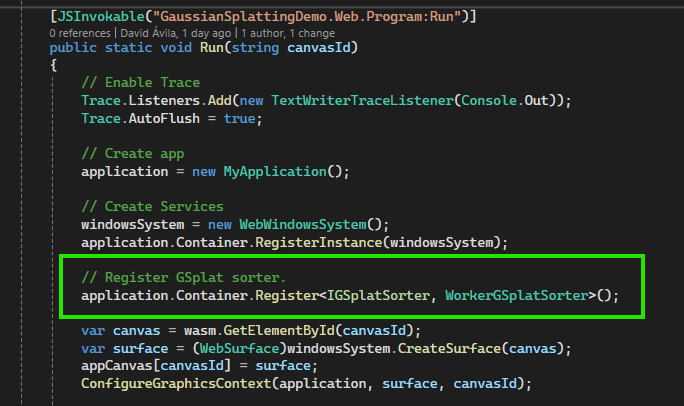
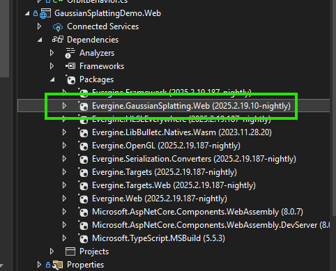
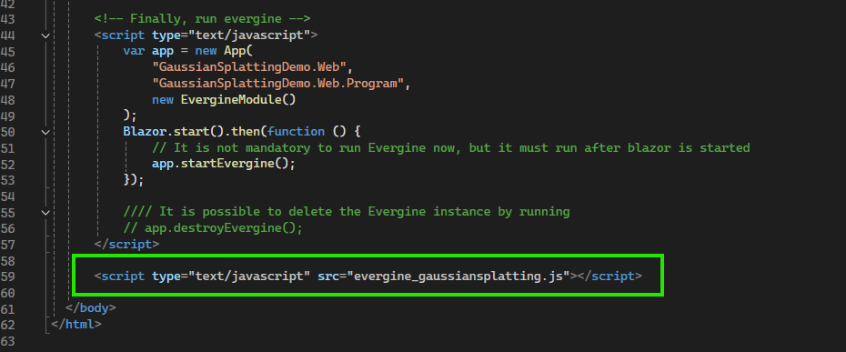
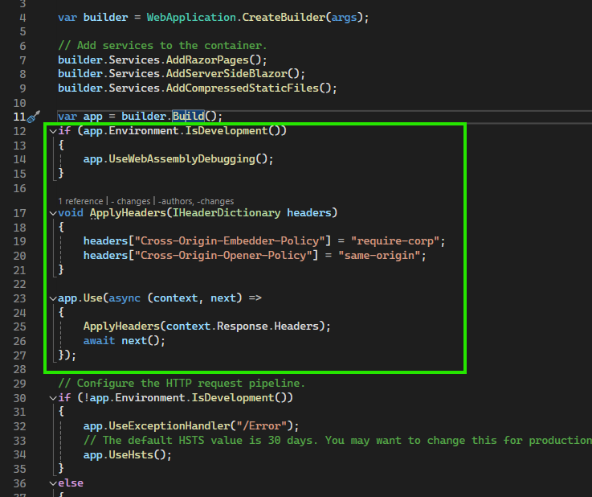

Gaussian Splatting on the web

On the Web platform, the add-on sorts the splats in a Web Worker, a background thread of the browser, so sorting millions of splats does not block rendering. This needs a NuGet package in your web project, one line of registration, a script in index.html, and two HTTP headers that allow the browser to share memory with the worker. The steps are the same for the Web (WebGL) and WebGPU profiles, and they match the SplatRender sample of the add-on repository.
Before you start, complete the Getting started steps and make sure your application has a Web or WebGPU profile.
1. Add the Evergine.GaussianSplatting.Web package
Add the Evergine.GaussianSplatting.Web NuGet package to your web project, usually named [ApplicationName].Web or [ApplicationName].WebGPU.

Important
Use the same version as the Evergine.GaussianSplatting add-on installed in your project.
When the project builds, the package copies its scripts to the wwwroot folder of your project: evergine_gaussiansplatting.js, evergine_sortworker.js, gsplat_native_bundle.js, gsplat_native_bundle.wasm, and gsplat_cache.js. It also generates gsplat_cache_manifest.js, which holds a hash of each file.
2. Register the web sorter
In the Program.cs file of the same project, register WorkerGSplatSorter as the IGSplatSorter of the application, in the Run method, right after the application is created:
using Evergine.GaussianSplatting.Sorter;
using Evergine.GaussianSplatting.Web;
// Create app
application = new MyApplication();
// Sort the splats in a Web Worker instead of the default sorter.
application.Container.Register<IGSplatSorter, WorkerGSplatSorter>();
GSplatRenderer uses the sorter registered in the container before it chooses one of its own.
3. Load the script in index.html
Add the script at the end of the body of wwwroot/index.html, after the scripts that start Evergine:
<script type="text/javascript" src="evergine_gaussiansplatting.js"></script>

Tip
Browsers cache these scripts aggressively. The sample loads them through gsplat_cache.js and the generated manifest, which add the file hash to each URL, so users get the new files after you update the package:
<!-- In the head, before evergine.js -->
<script type="text/javascript" src="gsplat_cache_manifest.js"></script>
<script type="text/javascript" src="gsplat_cache.js"></script>
<!-- At the end of the body, instead of the plain script tag -->
<script type="text/javascript">
window.gSplatCache.loadScript("gaussiansplatting", "evergine_gaussiansplatting.js");
</script>
4. Send the cross-origin isolation headers
The worker shares memory with the application through SharedArrayBuffer, which browsers only allow on cross-origin isolated pages. Make your server send these two headers with every response. In the Program.cs of your [ApplicationName].Web.Server or [ApplicationName].WebGPU.Server project, add this code right after var app = builder.Build();:
if (app.Environment.IsDevelopment())
{
app.UseWebAssemblyDebugging();
}
void ApplyHeaders(IHeaderDictionary headers)
{
headers["Cross-Origin-Embedder-Policy"] = "require-corp";
headers["Cross-Origin-Opener-Policy"] = "same-origin";
}
app.Use(async (context, next) =>
{
ApplyHeaders(context.Response.Headers);
await next();
});

Note
With Cross-Origin-Embedder-Policy: require-corp, the page can only load resources from other origins that allow it. If your splat files or other assets come from another server, that server must send the matching CORS or Cross-Origin-Resource-Policy headers.
Static hosting
Static hosts such as GitHub Pages cannot send custom headers. The SplatRender sample solves this with the third-party coi-serviceworker script, which adds the headers from a service worker. It must be the first script loaded in the head of index.html.
React template (Vite)
With the Evergine React template, the development server is Vite, so it must send the same headers. Add a plugin to vite.config.ts:
plugins: [
plugin(),
{
name: 'configure-response-headers',
configureServer: (server) => {
server.middlewares.use((_req, res, next) => {
res.setHeader('Cross-Origin-Opener-Policy', 'same-origin');
res.setHeader('Cross-Origin-Embedder-Policy', 'require-corp');
next();
});
},
},
],
To check that the setup works, open the browser console on your page and evaluate crossOriginIsolated. It must return true.